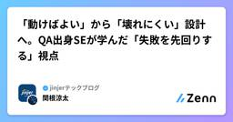

Zennの「QA」のフィード
フィード

エラー、欠陥、故障、根本原因とは？
Zennの「QA」のフィード
はじめに今回は、誤用しやすいエラー、欠陥、故障の違いや関係性と、根本原因に関して、私自身も誤用しやすいため、JSTQBに準拠した備忘録としてまとめてみました。正しい意味で用語を理解し、使うことは、コミュニケーションの疎通をスムーズに進める上でとても大切です。 エラーとはJSTQBシラバスでは、下記のように記載されています。人間はエラー（誤り）を起こす。そのエラーが、欠陥（フォールト、バグ）を生み出し、その欠陥は、故障につながることもある。人間は、時間的なプレッシャー、作業成果物、プロセス、インフラ、相互作用の複雑度、あるいは単に疲れていたり、十分なトレーニングを受けてい...
1日前

「動けばよい」から「壊れにくい」設計へ。QA出身SEが学んだ「失敗を先回りする」視点
Zennの「QA」のフィード
はじめにこんにちは！jinjerプロダクト開発部 SEの関根です。今年1月に双子の弟に誘われてjinjer株式会社に入社しました。今回は、開発未経験からSE（システムエンジニア）としてスタートし、前職のQA/QC（品質保証・品質管理）で培った視点を活かすことで、設計段階での手戻りを減らし、スムーズに設計書を作成できるようになったプロセスについて書いていきます。結論からお伝えすると、QA/QCの経験は単なる「テスト工程の知識」ではなく、「要件・設計段階から不具合を防ぎ、品質を作り込むための大きな武器」になります。 プロダクト設計の難しさと、最初にぶつかった壁SEとしてキ...
2日前
MagicPod MCPサーバーとClaude Skillsで実現する、QA定型業務の標準化
Zennの「QA」のフィード
こんにちは、Platform Engineering部 QAの池上です。GENDAではMagicPodを使ったE2Eテスト自動化を複数のプロダクトで運用しています。私はその中で、バッチ実行の結果確認やテスト環境の整備といったテスト自動化関連の業務を主に担当しています。GENDAでは自動テストのツールとしてMagicPodを採用しています。GENDAはM&Aによって取り扱うプロダクトの種類・数が時間とともに増えていく組織で、QA以外の職種のメンバーも含めて誰でも自動テストを実装できる体制を作りたいという狙いがありました。そのため、ノーコードツールであること、また社内で使われている...
2日前
[MGT]要望という名のエピックから考える、ウォーターフォールとアジャイルの要件マッピング（構造編）
Zennの「QA」のフィード
概要 執筆の意図ユーザーストーリーという体裁で提出された要望が、実態としてはエピック相当の大きさだった事例に遭遇したこの事例を構造的に分析すると、ウォーターフォールとアジャイルの成果物対応があいまいなまま運用されていることが根本原因だと考えた本記事では、両手法の成果物・粒度がどう対応するかという静的な構造マッピングを整理する実際に要望がどのタイミングでチケット化されるかという動的なフローについては、続編のフロー編で扱う移行手順（Stage設計）や、要望の原因分解・判定フローの詳細設計は本記事のスコープ外とし、別記事で扱う 要約ウォーターフォールは粒度ごとに独...
2日前
[MGT]要望という名のエピックから考える、要望をチケット化するタイミングの整理（フロー編）
Zennの「QA」のフィード
概要 執筆の意図前回の構造編では、ウォーターフォールとアジャイルの成果物が粒度としてどう対応するかという静的な構造を整理したしかし冒頭で紹介した事例で実際に起きたのは、この静的な対応関係が崩れたことではなかった要望というインプットが本来通るべき精査の工程を経ないまま、いきなり大きな受け皿であるストーリーに流し込まれたことが問題だった本記事では、要望が実際にどのタイミング、どのルートでチケット化されるかという動的なフローを整理する要望の原因分解・判定フローの詳細設計や、移行手順（Stage設計）は本記事のスコープ外とし、別記事で扱う 要約現場の要望がチケットに...
2日前
478件と497件 — 指定していない条件は、揃わない
Zennの「QA」のフィード
同じリリースを数えて、478件と497件自治体向けの業務システムを作っていて、私はそのQAをしています。数か月ごとにメジャーリリースがあり、そのリリースに何が入るのかを、バックログの課題を数えて確認しています。リリース時期ごとにリリースブランチを切っているので、マージ先を間違えると、入るはずのものが漏れたり、まだ完成していないものが出ていったりします。数えているのは、それを防ぐためです。ある日、2つの作業スレッドが、同じリリースについて別の件数を報告しました。片方が478件、片方が497件。同じ課題管理ツールから、同じ日に、同じリリースの課題を数えたはずのものです。どちらもエ...
3日前

テスト見積もりは掛け算2つで出せる 18
18
Zennの「QA」のフィード
「だいたい○○ケースくらいですかね」の正体テスト計画でスケジュールを立てるとき、テストケース数の見積もりはどうやっているだろうか。正直なところ、多くの現場では「前回と同じくらいの規模感だから○○ケースくらい」「経験的にこの手の機能なら△△ケース」という見積もりが主流だと思う。自分もそうだった。これで困るのは3つの場面。初めての領域。 過去実績がないから「だいたい」が通用しない説明責任。 上席に「なぜその工数なのか」と聞かれたとき、根拠を示せない精度のばらつき。 見積もる人によって2〜3倍の差が出る結局、見積もりの「勘と経験」の中身を分解してみたら、ちゃんと数式...
4日前

AI活用と自発的な発表で、QAエンジニアのオンボーディング理解を深めてみた
Zennの「QA」のフィード
こんにちは。特撮熱が爆上がり中のbun913と申します。2026年8月より株式会社ナレッジワークでQAエンジニアとして働き始めました。早速ですが、皆さんは「あぁぁ・・・早く業務で役に立ちたい」と思ったことはありますか？私は定期的に思います。今回はオンボーディングが非常に良い株式会社ナレッジワークで、この激動の時代にQAEとして転職した私が、オンボーディングで工夫してやってよかったことや改善できたところをお話ししたいと思います。 さっそくまとめ全体的な思想として「心の中での納得を大事にしながら、効率よくプロダクトの勘所と思想を吸収する」と考え、いくつかの工夫をしながらQAエンジ...
8日前
AIでコード生成が速くなっても、ソフトウェア開発は速くならない――AI時代の開発組織と5つのアーキタイプ
Zennの「QA」のフィード
はじめに生成AI、とりわけClaude CodeやCodexのようなコーディングエージェントによって、ソフトウェアを書く速度は急速に上がっている。しかし、ここには一つ重要な問題がある。コードを書く速度が上がることと、ソフトウェア開発全体のスループットが上がることは同じではない。2026年に報道されたMetaの「Project OT」は、この問題を考えるうえで興味深い事例になった。さらにClaude Code開発を率いるAnthropicのBoris Cherny氏が提示した「AI時代の開発者5つのアーキタイプ」を組み合わせて考えると、AIによってソフトウェア開発組織で何が起...
9日前
捏造禁止ゲートの安全税を自分のパイプラインで4回測った — 観点の件数は減らず、出所の誤りが残っていた
Zennの「QA」のフィード
どーもりょうさんです。自分はQAエンジニアで、普段のテスト設計に生成AI (Claude) を使っています。!ちなみに、この記事の文章自体もClaudeに書いてもらいました。中身自体は見て確認してたり、多少の文の付け足しはしています。この内容の集積自体はAIに調べた上で概要程度の目は通しています。しかしながら、専門家ではないため引用や解釈などが間違っている可能性はあります。あわせて、AIくさい文になっている可能性もあります。 まず「安全税」とは何か生成 AI にハルシネーション対策の指示を強くかけると、何が起きるか。2026 年の実測研究（arXiv:2601.0202...
9日前
週15分「バグに3つの問いを投げる」だけで、テストの先が動き出した
Zennの「QA」のフィード
「テスト＝QA」を卒業したい。でも何から？以前の記事で、テストとQAは違うという話を書きました。テストは「測る」行為です。QAは「良いものが生まれる仕組みをつくる」行為です。勉強にたとえるなら、テストは問題を解くことであり、QAは勉強法そのものを改善することです。反応をもらった中で一番多かったのが、「わかった。で、具体的に何をすればいい？」 でした。正直、自分も最初はそうでした。品質戦略の担当になったとき、「分析しよう」と意気込んでパレート分析やODCの教科書を開きました。でもデータが整っていません。ツールもありません。チームに「分析会議やりましょう」と言っても「その時間ある...
11日前
Structured Playwright (2) —— 変更に強いLocatorの設計
Zennの「QA」のフィード
Structured Playwright固有で「宇宙」という用語を使っていましたが、どうも大仰なのと、Playwrightで普遍的に使われていない用語でわかりにくくなってたので、「宇宙」→「スコープ」の様な汎用的用語に変えました。詳しくは末尾の変更履歴をご参照ください。 はじめに：変更追随性のもう一面この記事はStructured Playwright (1) —— 継続性から設計するE2Eテストの4層構造とハーネスの続編にあたります。前回はE2Eテストを4層に分けて「変更が届く範囲を設計して管理する」話を書きました。ボタンのラベルが変わればPage Objectの1行、手順が変...
15日前
Structured Playwright (1) —— 継続性から設計するE2Eテストの4層構造とハーネス
Zennの「QA」のフィード
第2回で用語の使い方を変更したのに合わせて記載を差し替えています(「局所宇宙」→「探索スコープ」)。記事の趣旨は変えていません。末尾の変更履歴をご参照ください。 はじめに：E2Eテストは大きくなるE2Eテストは運用を続ければ必ず大きくなります。スプリントごとに要件が積み上がるのだからそれ自体は健全なことです。問題はその大きくなり方。Playwrightのデフォルト構成では、テストが増えるときに同じ記述——Locator、操作手順、待機、検証——がコピーで広がっていき、結果2つの状態に誘引されていきます。変更追随性が下がる —— UIや手順のひとつの変更が、散らばった記述...
17日前
M&A後のプロダクトにQAはどう伴走するか ─ カラオケBanBanへのQA導入から自動化までの2年間
Zennの「QA」のフィード
こんにちは、Platform Engineering部 QA マネージャーの安藤です。私たちGENDAは「2040年、世界一のエンタメ企業へ」を「Vision/野望」に掲げ、その実現に向け、連続的なM&Aを成長の軸の一つとしています。それに伴い、GENDAには急速な事業拡大に加え、プロダクト数も多く、その事業内容も多岐にわたるという特徴があります。そのため、GENDAにおけるプロダクトの品質保証を担う私たちは、インプロセスQAではなく、横断的にプロダクト開発に伴走するPlatform Engineering部の一員としてQAチームを組成し、品質改善活動を行っています。本記事...
18日前
そのグリーンは信じていいのか — 正しさを仕組みにして、その仕組みも疑う
Zennの「QA」のフィード
はじめにこんにちは！TOKIUMでQAチームのリーダーをしている西田です。4月に「QAチームのナレッジを『ハーネス』にする」という記事で、テスト設計の自動化を書きました。仕様書やソースコードから、テスト観点とテストケースを一気通貫で生成するパイプラインの話です。https://zenn.dev/tokium_dev/articles/705334e2f6ac10あの記事の結びに、宿題をいくつか残していました。中でも大きかった宿題は2つ。「実行結果のフィードバックループ」と「E2Eテスト自動化との接続」です。この4ヶ月は、主にこの2つに取り組んでいました。テスト実行の...
18日前
AIエージェント10体で「仮想QAチーム」を組んだ話
Zennの「QA」のフィード
!この記事でつかうものClaude Code：Anthropic社が提供するターミナルうえで動くAIコーディングアシスタント。チャット形式でファイル操作・コード生成・分析などができるカスタムエージェント：Claude Codeに「専門家の人格」を与える仕組み。Markdownファイル1つで、名前・得意分野・使えるツール・AIモデルを定義できるこの記事では、このカスタムエージェントを10体作って「仮想チーム」にした話をする QAチームが1人しかいない問題自分はビットキーでソフトウェア品質戦略を担当している。QAに関わるメンバーは他にもいるが、品質戦略の専門職としては...
19日前
プログラミング未経験の私がAIでWebサービスを作って3ヶ月半。数字を全部出します
Zennの「QA」のフィード
私は**ソフトウェアのテストエンジニア（QA）**です。プログラミングの経験は、始めた時点でほぼゼロでした。強いて言えば1〜2ヶ月、Excelは多少使える、その程度です。その状態からAIに聞きながらWebサービスを作って公開し、3ヶ月半が経ちました。作ることは、想像していたよりずっと簡単でした。難しかったのは、そのあとです。!先に結論3ヶ月半で 約140ページを公開した週の訪問者は 約65人、売上は 0円、月額コストは 約300円作る・公開する・整えるは全部できた。人に来てもらうことだけができていない個人開発の記事で数字を出す人はあまりいないので、全部出します。...
19日前
Android実機ラボを安定運用する「Run Card」の作り方
Zennの「QA」のフィード
Android の実機ラボは、端末の台数を増やしただけでは安定しません。前回の実行でログイン状態が残っている、権限ダイアログが開いたまま、キーボードや言語設定が変わっている、ストレージが不足している――こうした状態差が、アプリの不具合と同じように見えるからです。そこで、Flow や Appium の実装より先に「Run Card」を書きます。Run Card は、1 回のチェックがどの状態から始まり、何を確認し、どこで停止し、どの証拠を残すかを定義する短い契約です。 1. 目的を 1 つに絞る最初に、この実行がどの判断を支えるかを決めます。リリースを止めるスモークテストQA...
20日前
「1人目QA」から「QAチーム」へ ─ 2人目のオンボーディングで効いた工夫と、後から気づいた大切なこと
Zennの「QA」のフィード
はじめに — 2人目QAを迎えるまでに何を用意したかこんにちは。株式会社ZENKIGEN QAエンジニアの横田です。普段はQAエンジニアとして、Webアプリケーションのテスト設計・実施・改善に取り組んでいます。今回は、1人目QAとして2人目のメンバーを迎えるまでに何を整備し、何が足りなかったかを振り返ります。私は2024年2月に「1人目QA」としてZENKIGENに入社しました。QA専任メンバーがゼロの組織で、品質管理の基盤をゼロから構築してきた経緯は、過去の記事でも触れてきました。「Claude Code」でバグ起票を自動化した話（2月）QAの守備範囲、広がりすぎ...
23日前
観点ではなく「質問」でAIを測ってみた — 同じ仕様の欠陥が、聞き方ひとつで見えたり消えたりする
Zennの「QA」のフィード
1. はじめに — 採点の物差しを変えてみる自分はQAエンジニアで、普段のテスト設計に生成AI（Claude）を使っています。これまでこの連載では、モデルの実力を「テスト観点がどこまで出るか」で測ってきました。固定の採点項目を用意して、10回走らせて、何回出たかを数える方式です。前回の Opus 5 測定もこの方式でした。ただ、測りながらずっと引っかかっていたことがあります。深い観点——仕様の矛盾や欠落の指摘——は、実務では観点リストの形ではなく、仕様作成者への質問の形で出てくるものです。実際、過去に人間の目で判定核を裁定したときも「到達しているが、実務上はバグ断定でなく質問の...
25日前